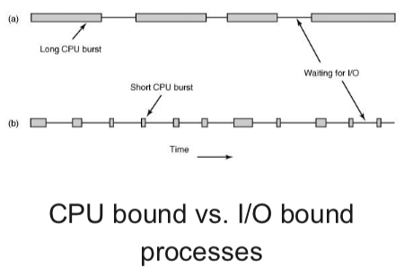
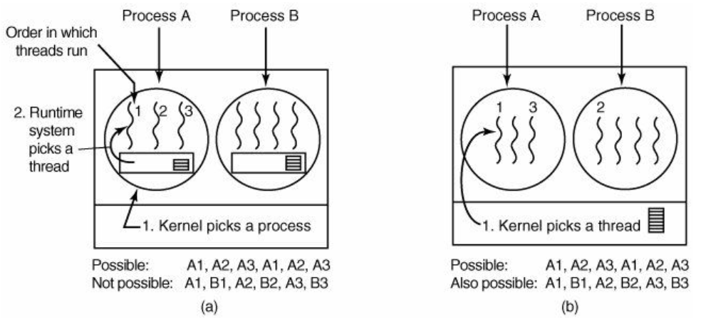

if more processes ready than CPUs available:
when to schedule?
process exits
process blocks on IO or semaphore
when new process is created
when IO interrupt occurs
when clock interrupt occurs
scheduling #goals
Batch scheduling algorithms:
Interactive scheduling:
real time systems
main concerns:
soft real time vs hard real time (cannot miss any deadlines)
can consist of periodic and aperiodic tasks
schedules can be static (schedules are known in advance) or dynamic (make scheduling decisions during execution)
system with periodic tasks is schedulable when we can meet the deadlines
